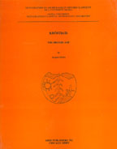

Jacques Morin, edited by John M. Fossey
Khostia II: The Bronze Age
McGill University Monographs in Classical Archaeology and History, J.M. Fossey, Ed. Ares: Chicago, 2004
 |
The site of Khostia, located approximately 60 km West-South-West of Thebes, about one km inland above the coast of the Gulf of Korinthos (fig.1.1), lies at an altitude of 200 meters above sea level upon a flattened area and surrounding slopes near the end of a rocky spur advancing Southwards from the base of Mount Helikon's Palaiovouno massif, from which it is separated by a shallow saddle. For most of its existence, the settlement appears to have been a small town or a village, although it had the status of a city during the Hellenistic period, since the diagnostic remains visible on its surface, including those dated to prehistoric times, extend over an area of around 4.45 hectares (Fossey, 1981: 12); this surface area corresponds to the maximum extent reached by the site during the long history of its occupation. During the Bronze Age the settlement extended probably over only part of this area. The site has been known for a long time, but has been only sparingly visited by scholars, following Leake's report at the beginning of the 19th century (Fossey, 1981: 1 & 11); commentaries about it are few and generally brief. Gomme (1911-12: 205), Frazier (1913: V.134) and Philippson & Kirsten (1951: 456) signal its location, while Philippson & Kirsten (1951: 687) also mention the presence there of Middle Helladic material. The earliest study, itself relatively short, devoted specifically to the ruins visible on the surface of the Kastron is due to Busing & Busing (1972: 74-87). The only well preserved remains belong exclusively to the historical period (Hellenistic to Late Roman); they consist of an important circuit wall enclosing most of the settled area. The few wall segments surviving to any appreciable height explain the modern toponym of Kastron, specifically Kastron Khostion, the "kastron of Khostia" usually applied to it locally. Fossey (1981: passim, especially 62-70 and figs 15-21; 1988: 187-194) provides a detailed description of the architectural features of the circuit. These walls, as well as a limited amount of literary and epigraphic documents relevant to the historical city, have been the main focus of interest for most scholars until now and have allowed them to equate the site with the small Boiotian city of Khorsiai (for the main bibliography of the site see Fossey, 1988: 188; see also Roesch, 1965: 56-58, and Roesch, 1970). Prehistoric remains visible on the surface present an even more modest picture of the settlement than the historical period, since the only signs of human activity at the site during the Bronze Age are limited to sherds. The sequence of Bronze Age activity on the site was first established by Heurtley (1923-25: 42); the compilations of Hope-Simpson (1965: 123 no. 420) and Hope-Simpson and Dickinson (1979: 250, G36) essentially reiterate the same data. Fossey (1988) has published a more complete sequence based, in part, on his own observations of surface material, as well as on the preliminary study of material excavated in 1980 and 1983 (Fossey, 1981; Fossey & Morin, 1986; Fossey, 1988:187-193; Fossey & Morin, 1989). The present study constitutes the end product of the survey and the two excavation seasons. |
| Back to Publications | Table of Contents |